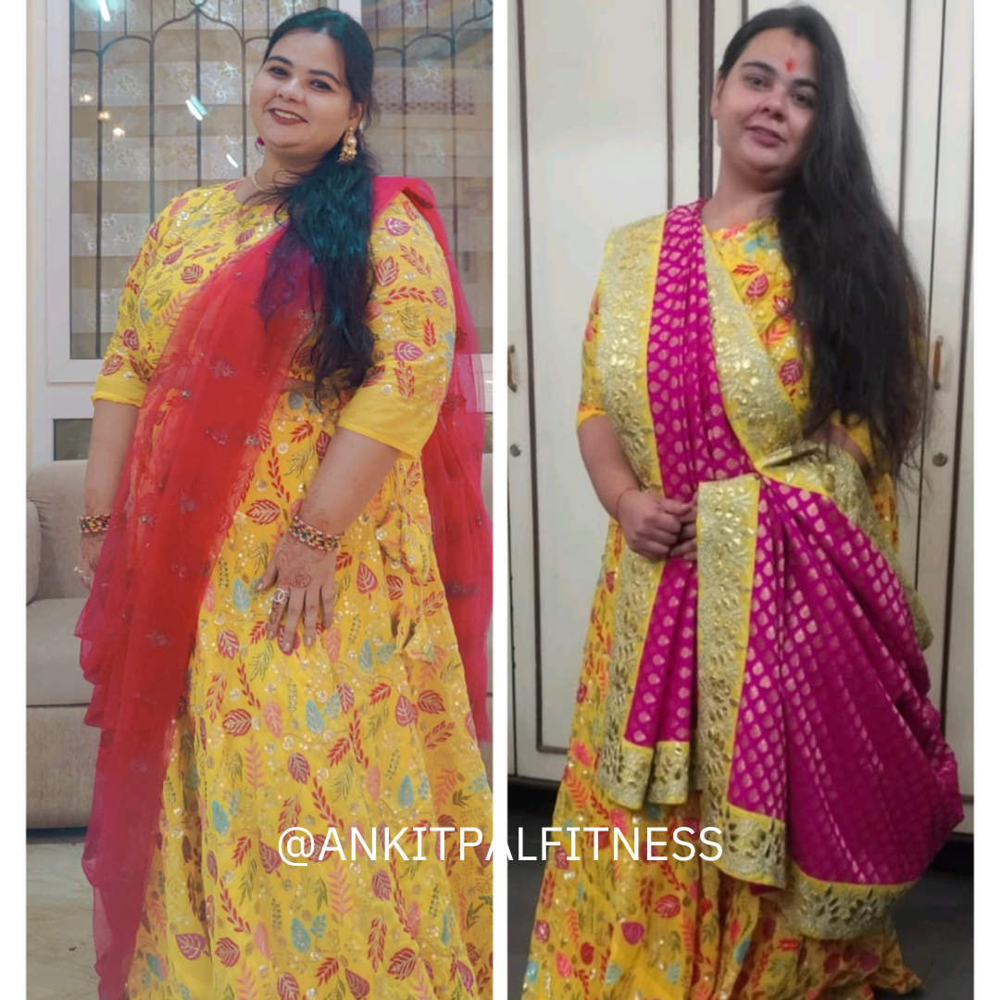
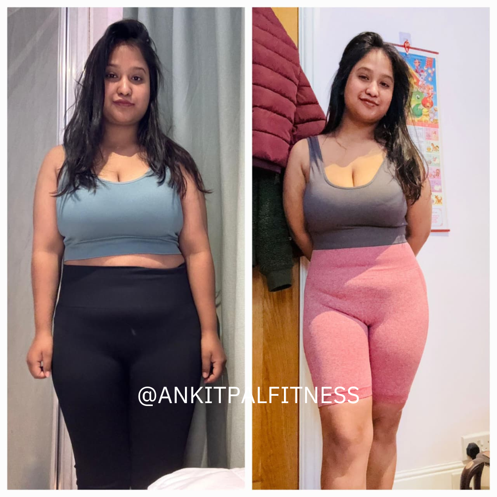
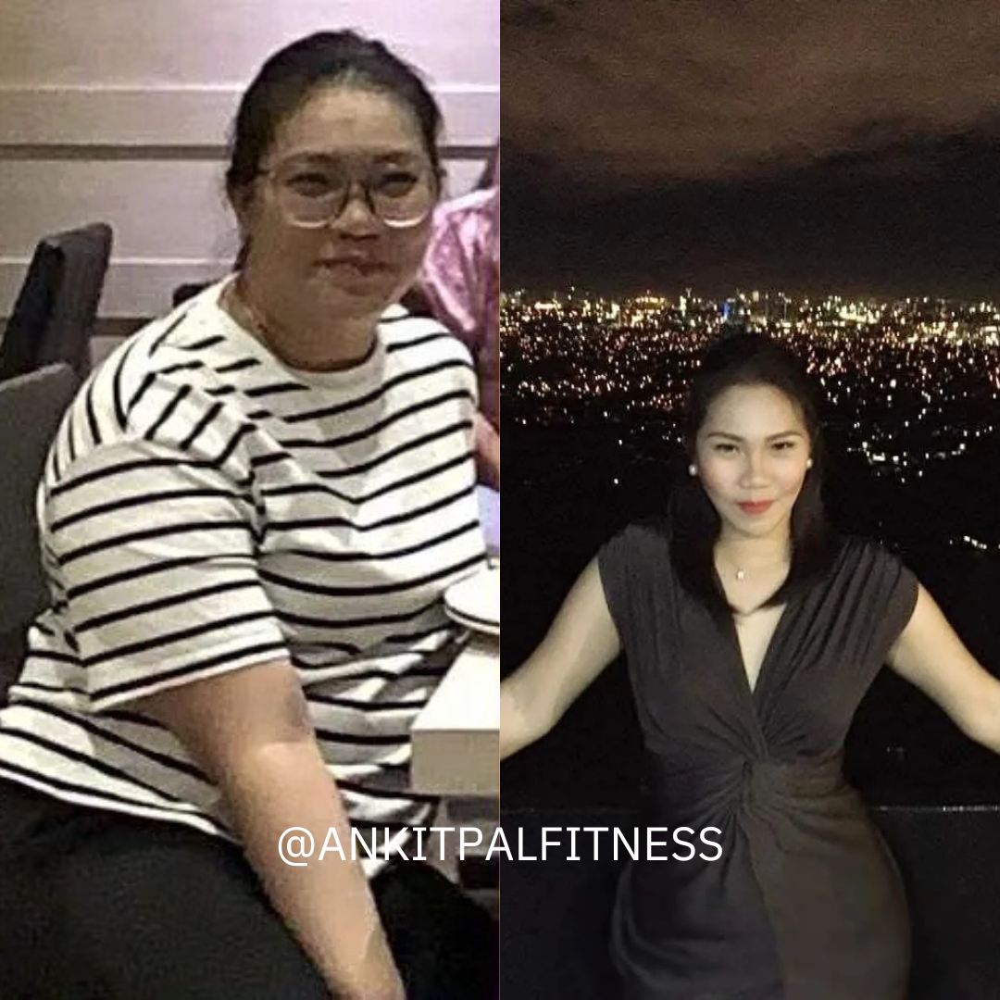
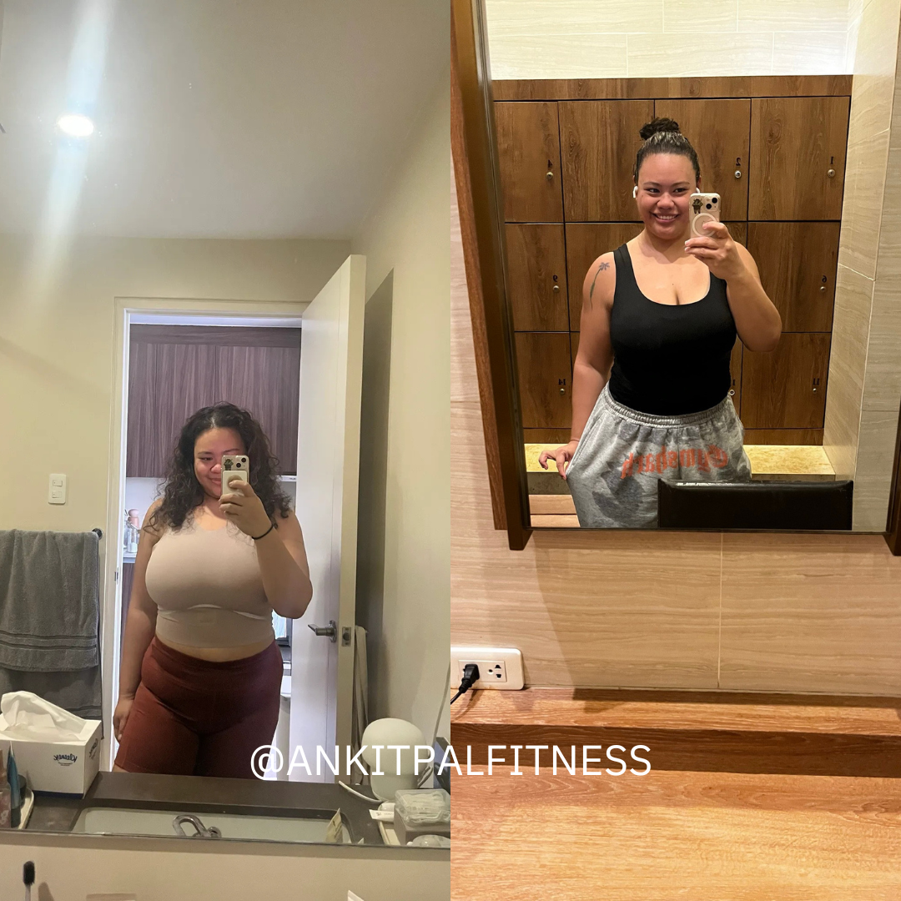
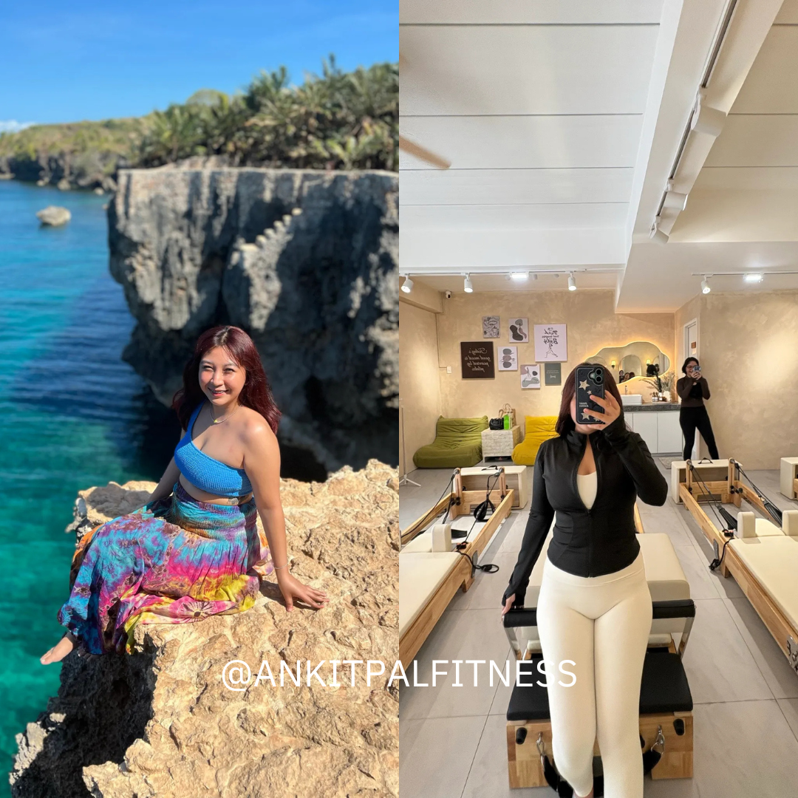
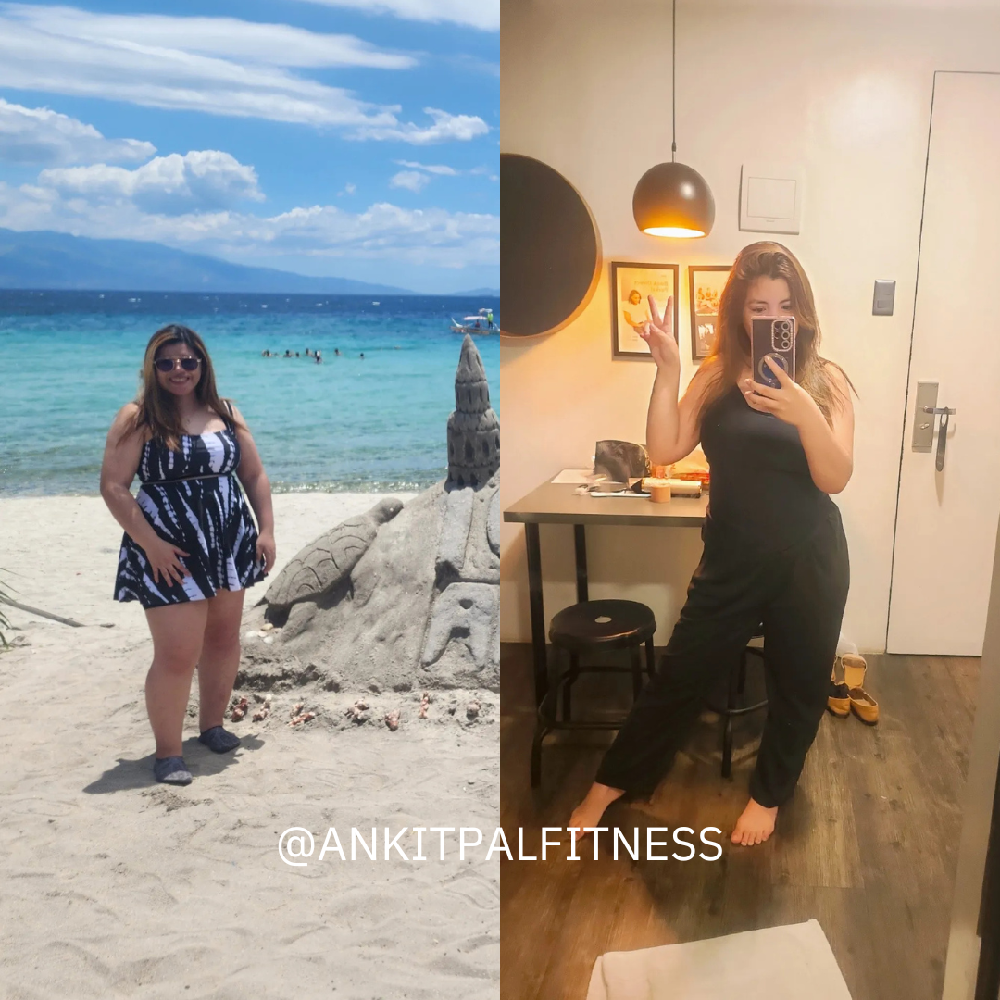
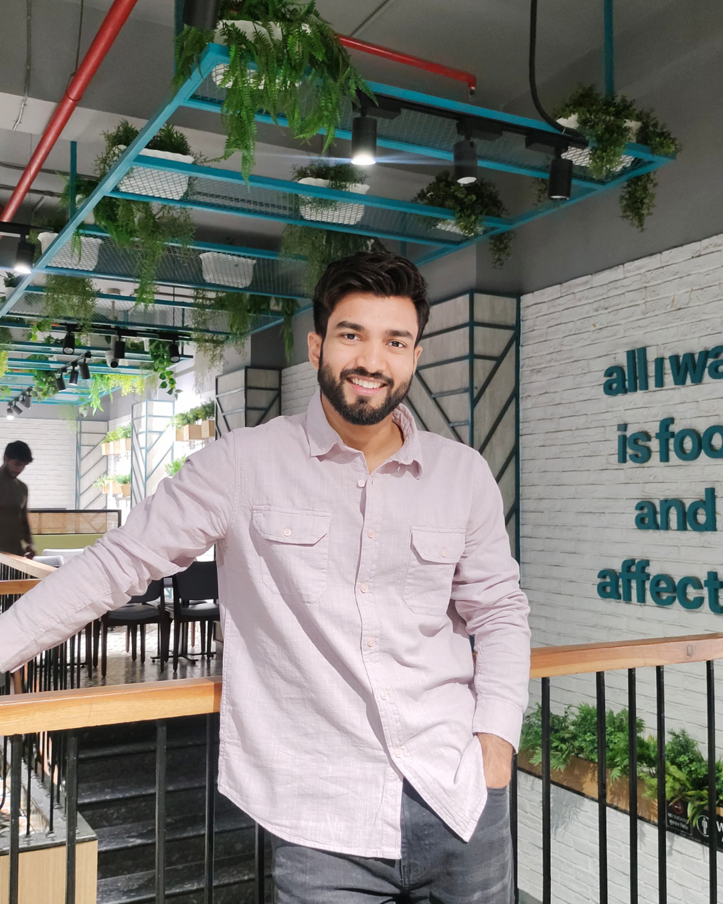

No more crash diets. No more gym pressure. No more starting over every few months. Using the Permanent Fat Loss Framework, I help busy working women lose weight in a way that actually sticks.
✓ No payment needed · ✓ 30-min call · ✓ No gym required






The biggest pain point isn't food. It's a body that's fighting hormones, stress, and a packed work schedule — and a system that was never built for that.
Most plans assume you have a "normal" metabolism, free evenings, and zero hormonal chaos. None of that is true for you.
A plan that adjusts to your hormones and your calendar — not the other way around — backed by a real coach who's accountable to your results.
You've tried cutting calories, random workout videos, and "eating clean" — but between back-to-back meetings, hormonal shifts, and a body that feels like it's working against you, nothing sticks anymore.
A plan built around your hormones, lifestyle, and food preferences — not a copy-paste diet sheet.
Real coaching sessions with me, not a generic app — adjusted as your body responds.
Structured check-ins keep you consistent, even on your busiest weeks.
If you follow the plan, attend your coaching sessions, complete your weekly check-ins, and stay consistent throughout the program — but don't see measurable progress by the end of the 90 days —
You'll receive an additional 30 days of coaching support, completely free.

I'm an internationally certified personal trainer with 8 years of experience in the fitness industry.
Over the years, I've helped 1000+ women completely transform their bodies while still enjoying life. I focus on sustainable fat loss — a method that actually fits into your daily routine, no matter how busy you are.
I combine science-backed training, nutrition, and lifestyle guidance to help you finally achieve lasting results.
Book a free 30-minute call. We'll talk through your hormones, your lifestyle, and build a plan that actually fits your life.
Book your free call now